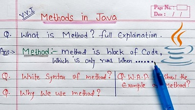

Software Development 2
SEMESTER 2
I'm not gonna lie, that is the module where I'm feeling lost myself a little bit but because its like learning a new language and sometimes the new information is so overwhelming. Still keep practicing the previous lectures and labs and sometimes searching on the web as well to find out what is not working and why. A follow on module to this is Software Development 3. More information on that module here Software Development 3.
